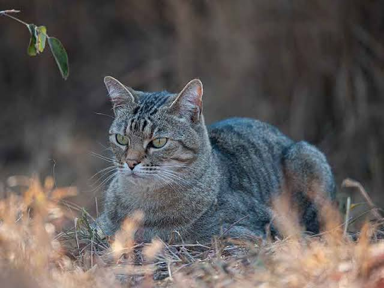

This picture shows the African Wildcat, Felis Silvestris Lybrica, which evolved into the cats that we now have today, Felis Catus. Cats are one of the most popular pets on Earth, kept on every continent except Antarctica. Though I'm at least 90% sure that one of those research vessels down there does have a ship's cat, but cats are also weird. Domestic cats, or Felis Catus, evolved from the African wildcat, Felis Silvestris Lybica, making them literally the descendants of those cats that helped police grain stores in Ancient Mesopotamia. So yeah, cat genes go way back. In fact, in their millennia of interacting with humans, cats have been seen as everything from wild animals to Barnyard helpers to Companions, Vermin, gods, and of course, tools of Satan.